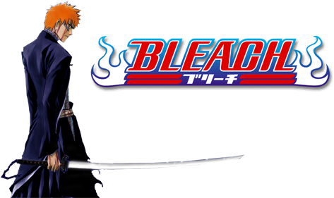

Bleach
Autor: Tite Kubo

É uma série de mangá escrita e ilustrada pelo mangaká japonês Tite Kubo, que segue as aventuras de Ichigo Kurosaki que após ganhar os poderes de um Ceifeiro de Almas (shinigami), através da ceifeira Rukia Kuchiki, sendo então forçado a guiar as almas boas ao mundo pós-vida Soul Society, e a também derrotar os Hollows (monstros espirituais malignos) que tentam devorá-las.
História
Ichigo Kurosaki é um estudante 👨 de 15 anos que tem uma estranha capacidade de ver, tocar e falar com espíritos de pessoas mortas. Numa noite, Ichigo encontra uma shinigami 💀 , personificação japonesa do deus da morte — chamada Rukia Kuchiki, e esta se surpreende por ele poder vê-la. A conversa entre os dois é interrompida pela aparição de um Hollow, entidade espiritual maligna. Rukia é gravemente ferida ao tentar proteger Ichigo, e então, como último recurso, ela decide transferir parte de seus poderes a ele, para que este então pudesse enfrentar o Hollow de igual para igual e proteger sua família. Ichigo acidentalmente acaba absorvendo os poderes de Rukia por completo devido ao seu poder espiritual, e assim consegue vencer facilmente o espírito maligno. No dia seguinte, Rukia aparece na escola de Ichigo, como uma humana de aparência normal, usando um gigai (material que permite os espíritos poderem conviver no mundo humano sendo vistos e podendo tocar objetos). Ela informa que devido ao fato de Ichigo ter absorvido seus poderes, ela não poderia voltar ao mundo pós-morte (Soul Society ou Sociedade das Almas em português) até recuperar totalmente sua força de shinigami.
Arcos da História
- 💀 Shinigami Substituto
- Capítulos: 1 - 70
- Episódios: 1 - 20
- 💀 Sociedade das Almas
- Capítulos: 71 - 182
- Episódios: 21 - 63
- 💀 Arrancar: A Chegada
- Capítulos:183 - 240
- Episódios: 110 - 131
- 💀 Arrancar: A Entrada Sorrateira no Hueco Mundo
- Capítulos: 241 - 315
- Episódios: 132 - 167
- 💀 Arrancar: A Guerra de Karakura
- Capítulos: 316 - 423
- Episódios: 190 - 316
- 💀 Fullbringer: O Shinigami Substituto Desaparecido
- Capítulos: 424 - 479
- Episódios: 343 - 366
- 💀 Guerra Sangrenta de Mil Anos
- Capítulos: 480 - 686
- Episódios: 367 - ???
Raças
- Shinigami
- Shinigami são os guardiões das almas que passam pelo círculo de transmigração entre os mundos. No passado eram conhecidos como Balancers. Eles são considerados o oposto dos quincy.
- Quincy
- Os Quincys, em termos modernos, eram humanos médiuns que podiam detectar a presença de Hollows. Tudo começou quando eles começaram a preparar-se para combater os Hollows, igual aos Shinigamis. Praticamente todos foram extintos pelos Shinigamis há mais de 200 anos, a fim de impedir a destruição do mundo, restando alguns remanescentes que perpetuaram à descendência Quincy.
- Hollow
- Hollow é uma raça de criaturas que nascem a partir de almas humanas que, por várias razões, não passam para a Soul Society após a sua morte e permanecem no Mundo Humano por muito tempo. Eles são espíritos corruptos com poderes sobrenaturais que devoram as almas dos vivos e seres humanos falecidos. Hollows se estabelecem em Hueco Mundo, mas podem passar para o Mundo Humano e para Soul Society. Hollows são o oposto dos seres humanos.
- Arrancar
- Arrancar, é um Hollow que retirou sua máscara e ganhou poderes como os de um Shinigami.
- Fullbringer
- Fullbringer,são seres humanos espiritualmente conscientes que nascem com a capacidade Fullbring, o que lhes permite manipular as almas que residem em toda a matéria física.